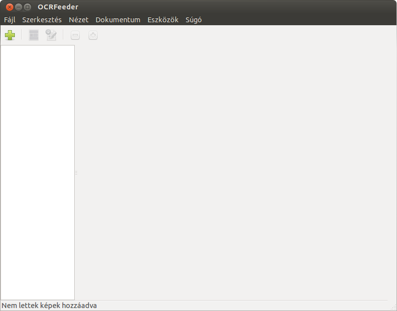

Az OCRFeeder egy több funkcióval rendelkező grafikus karakterfelismerő alkalmazás, melyet a Beszélő Linux kiadás látássérült felhasználói a 3.02-es verziótól kezdődően tudnak használni, amennyiben a megfelelő csomagokat feltelepítették a rendszerükre. A BeLin 4.01 kiadás azonban már beépítetten tartalmazza ezt a rendkívül hasznos alkalmazást. Az Orka Képernyőolvasó jól együttműködik ezzel az alkalmazással.
Az OCRFeeder alapértelmezetten a Tesseract karakterfelismerő motort használja az optikai karakterfelismerésre, és többek között a következő funkciókat támogatja:
Oldalak beolvasása és későbbi felismertetése lapolvasóról,
Képek beolvasása és felismertetése képfájlokból,
Egy mappában található összes kép beolvasása és későbbi felismertetése,
Képként elmentett több oldalas PDF fájlok beolvasása és felismertetése.
Az alkalmazás fejlesztője minden fontosabb funkcióhoz billentyűparancsot is rendelt, így a fontosabb szolgáltatásait nem csupán a menürendszeren keresztül lehet kiválasztani, hanem közvetlenül is elérhetőek. A beolvasott és felismertetett teljes szöveges kimenet, vagy annak egy része a következő formátumokba exportálható:
szöveges fájl (TXT),
PDF,
Libreoffice ODF Dokumentum,
HTML dokumentum.
Az OCRFeeder alkalmazás elindítható az ALT+F2 billentyűkombináció lenyomása után az ocrfeeder paranccsal, vagy az ALT+F1 billentyűkombináció lenyomása után az Iroda almenü OCRFeeder menüpontjának aktiválásával. Az alkalmazásban a következő főmenü-pontok érhetők el:
Fájl menü:
A megnyitás menüponttal egy korábban elmentett projekt dokumentumot lehet megnyitni, így lehetséges egy létező projekt dokumentumhoz további oldalak, vagy képek hozzáadása.
A Mentés és a Mentés másként menüpontok segítségével a betöltött képeket, pdf fájlokat lehet elmenteni egy projekt dokumentumba, amit később újra meg lehet nyitni az OCRFeeder alkalmazással.
A Kép hozzáadása, Mappa hozzáadása menüpontok segítségével egyetlen képet, vagy egy teljes mappát lehet hozzáadni a projekt dokumentumhoz, amelyen később a karakterfelismerés végrehajtható
A PDF importálása menüpont segítségével egy PDF fájlt lehet hozzáadni a projekt dokumentumhoz. A fájlnév megadása után az OCRFeeder a PDF fájl oldalait képekké konvertálja, és ezeken a képeken fog később megtörténni a karakterfelismerés.
Ha a lapolvasóját támogatja a Sane illesztő-szoftver, az Oldal importálása lapolvasóról menüpont segítségével lehet beolvastatni a lapolvasóban levő dokumentumot. A menüpont gyors aktiválásához bármikor használható a CTRL+SHIFT+I billentyűkombináció.
Az alkalmazás a karakterfelismerést nem hajtja végre automatikusan, azt külön kell kezdeményeznie. Ennek az az oka, hogy a képek betöltése után a program szükség esetén lehetőséget biztosít a képeken a felismerési terület kijelölésére. Ez a művelet csak az egérrel hajtható végre.
Dokumentum menü:
A Dokumentum felismerése menüpont segítségével a teljes projektdokumentumon megtörténik a karakterfelismerés. A menüpont bármikor aktiválható a CTRL+SHIFT+D billentyűkombinációval.
Az Oldal felismerése menüpont segítségével egy kijelölt oldalt, vagy oldalterületet lehet felismertetni. Egy oldal kijelölhető a képeket tartalmazó táblázatban a nyílbillentyűk segítségével.
A Fájl menü Exportálás menüpontjának aktiválása után először a kimeneti formátumot kell kiválasztania. A lehetséges kimeneti formátumok: ODT, HTML, PDF vagy Egyszerű szöveg formátum.
A kimeneti formátum kiválasztása után megjelenő párbeszédablakban megadható, hogy az alkalmazás az összes oldalt, vagy csak a kijelölt oldalt exportálja. Az összes oldal az alapértelmezett beállítás.
Az OK gomb aktiválása után meg kell adni a kimeneti fájlnevet, melybe a felismert kimenetet szeretné menteni. A mentés gomb aktiválása után a felismertetett kimenet mentésre kerül a kiválasztott kimeneti formátumba.